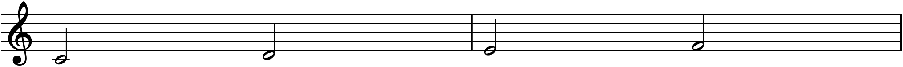
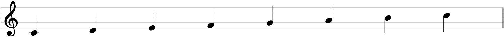
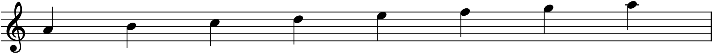
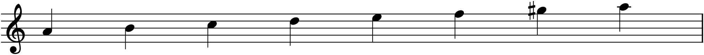
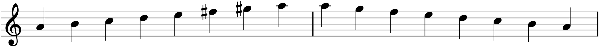

Chapters 5 and 6 gave you the two axes of the graph — pitch and time — and the whole palette of pitches to choose from: every white and black key, all the way up. But music almost never uses all of them at once. It picks a small family of pitches and stays mostly within it, and that family, lined up in order from low to high, is a scale. Choosing a scale is the first compositional decision most pieces make, because it sets the pitches everything else will be built from — the melody, the chords, the whole harmonic world. This chapter is about the two families that underlie the vast majority of Western music: major and minor.
7.1What a scale is
A scale is a ladder of pitches spanning one octave, after which the pattern repeats. Play the seven white keys from one C up to the next and you have climbed a scale; the eighth note closes the octave and is “the same note” as the first, an octave up, exactly as in Chapter 5. Seven distinct letter-names, then home again.
But which seven, and — more importantly — the spacing between them, is what gives a scale its character. Two scales can start on the same note and feel like different emotional worlds, because what defines a scale is not its starting pitch but its pattern of steps. So before the scales themselves, the steps.
7.2Half steps and whole steps
There are only two distances a scale is built from. A half step (or semitone) is the smallest distance in Western music: from any key to the very next key, black or white. A whole step (whole tone) is two half steps — you skip the key in between.
On the keyboard the difference is visible. From C to D you pass over the black key between them, so C–D is a whole step. But from E to F there is no black key between — they are adjacent — so E–F is a half step. The same is true of B–C. Those two spots, E–F and B–C, are the only places on the keyboard where two white keys sit side by side with no black key between them, and they are the reason the white-key scale sounds the way it does.

Keep Figure 7.1 in mind, because everything below is just an arrangement of these two distances. A scale is a pattern of whole and half steps, nothing more.
7.3The major scale
The major scale is the sound most people mean by “the scale” — the do-re-mi-fa-so-la-ti-do you sang in school. Its pattern, from the starting note upward, is:
whole – whole – half – whole – whole – whole – half
Start that pattern on C and something remarkable happens: the two half steps land exactly on E–F and B–C, the keyboard’s two natural half steps. So the C-major scale is all white keys — no accidentals needed. The keyboard is, in a sense, built around C major.

The pattern is the definition, not the key of C. Start the same whole-and-half sequence on G, or on E♭, and you get G major or E♭ major — the same bright major quality, transported. To keep the pattern intact from a different starting note, you have to bend some pitches with sharps or flats, and which ones is precisely the subject of Chapter 8. For now the point is that major is a shape you can carry anywhere; C is just where it happens to need no black keys.
7.4Scale degrees
Within a scale, each note has a degree — its numbered position, 1 through 7 — and the numbers matter more than the letters, because they describe a note’s role independent of key. Degree 1 in C major is C; degree 1 in G major is G; but degree 1 is “home” in both. Musicians write these with a caret: 1̂, 2̂, 3̂ and so on. Each also has a traditional name:
| Degree | Name | Role |
|---|---|---|
| 1̂ | Tonic | home; the note of greatest rest, where melodies settle |
| 2̂ | Supertonic | one step above the tonic |
| 3̂ | Mediant | midway between tonic and dominant; colours the scale major or minor |
| 4̂ | Subdominant | a step below the dominant; pulls gently downward |
| 5̂ | Dominant | the tonic’s strongest relative; the pole of tension |
| 6̂ | Submediant | midway below, the “relative minor” root |
| 7̂ | Leading tone | a half step below the tonic; leans hard toward home |
Three of these do most of the work. The tonic (1̂) is home — the note a piece is in, the one that sounds final. The dominant (5̂) is its opposite pole, the note of greatest tension, and the pull between the two is the engine of nearly all Western harmony (Part 2). And the leading tone (7̂) earns its name from the major scale’s final half step: sitting just a semitone below the tonic, it leans into it — play B before C and you can feel the B wanting to resolve up. Hold that idea, because it is exactly what goes missing, and then gets rebuilt, in the minor scale.
7.5The minor scale
Rearrange the two half steps and you change everything. The natural minor scale uses the pattern:
whole – half – whole – whole – half – whole – whole
Start that on A and, once again, you land on all white keys — because A natural minor uses the very same seven pitches as C major, just beginning from a different note. (That shared-pitch relationship makes A minor the relative minor of C major, a connection Chapter 8 turns into a working tool.) But the feel is transformed. The half steps now fall in different places, and above all the third degree is lower — a minor third above the tonic instead of a major third — and that lowered 3̂ is the single note most responsible for minor’s darker, more shadowed colour.

7.6Why minor has three forms
Look again at natural minor’s top and you will find something missing. Its 7̂ — G, in A minor — sits a whole step below the tonic, not a half step. So minor has no leading tone: that eager half-step pull into home is simply gone, and cadences in pure natural minor can feel slack, unwilling to close. Composers wanted the pull back, and the fix gives minor its second form.
The harmonic minor scale raises the 7th by a half step — G becomes G♯ in A minor — manufacturing a leading tone where natural minor had none.

Raising the 7th solves one problem and creates another. Between 6̂ and the new 7̂ — F and G♯ — there is now an awkward step-and-a-half gap, an augmented second, that sounds jagged in a melody even though it works well under a chord (hence the name harmonic minor). The third form smooths it. Melodic minor raises both the 6th and 7th degrees on the way up — F♯ and G♯ — closing the gap into two ordinary whole steps, and then, coming back down, reverts to natural minor, because a descending line has no leading-tone job to do.

So minor is not one scale but a small system: natural for its unaltered colour, harmonic when the music needs a leading tone under a chord, melodic for smooth melodic motion. A composer moves among the three freely, often within a single phrase, choosing whichever degree the moment wants. This flexibility — three usable versions of 6̂ and 7̂ — is exactly what makes minor keys richer and more pliable than major, and it is the answer to the question the Preface left hanging.
7.7What a scale is for
A scale is not a warm-up exercise; it is source material. The scale you choose supplies the notes your melody will draw from (Part 3) and, stacked into thirds, generates the chords of the key (Part 2). Choose a scale and you have chosen a world — a set of pitches, a home note, a characteristic colour, a set of tendencies about which notes lean where. Everything downstream is the working-out of that choice.
Major and minor are not the only scales — modes, the pentatonic scale, and others each carve the octave differently, and Part 3 will open that door a little. But major and minor account for the overwhelming majority of the music you know, and they are more than enough to compose real, complete pieces. Master these two families and their spellings — the business of Chapter 8 — and you have the pitch vocabulary of common-practice music in hand.
In MuseScore
Entering a scale is just entering notes, one after another, from Chapter 2 — but two tools make scales and their accidentals quick.
- Enter note-input mode with N, choose a duration (say 5 for quarters), and type the letters. For a plain C-major scale: C D E F G A B C.
- To raise or lower a note chromatically, press ↑ or ↓ — each arrow moves the selected note by a half step, adding the sharp or flat for you. So to turn a G into the G♯ of A harmonic minor, enter G, then press ↑ once.
- The accidental buttons on the note-input toolbar (§2.2) do the same thing explicitly: with a note selected, click the ♯, ♭, or ♮.
You can also let MuseScore supply a whole key’s worth of accidentals at once with a key signature — but that is Chapter 8’s subject, so for now write accidentals in by hand as above.
Try it: enter A natural minor — A B C D E F G A — and press Space to hear its shadowed colour. Then click the 7th note, press ↑ to sharpen the G, and play it again: that one raised note is the leading tone appearing, and you can hear the ending suddenly want to close.